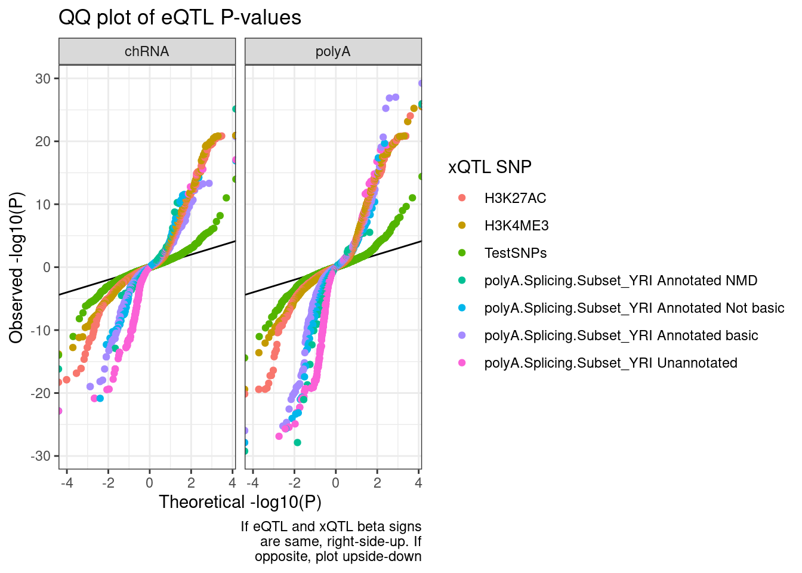
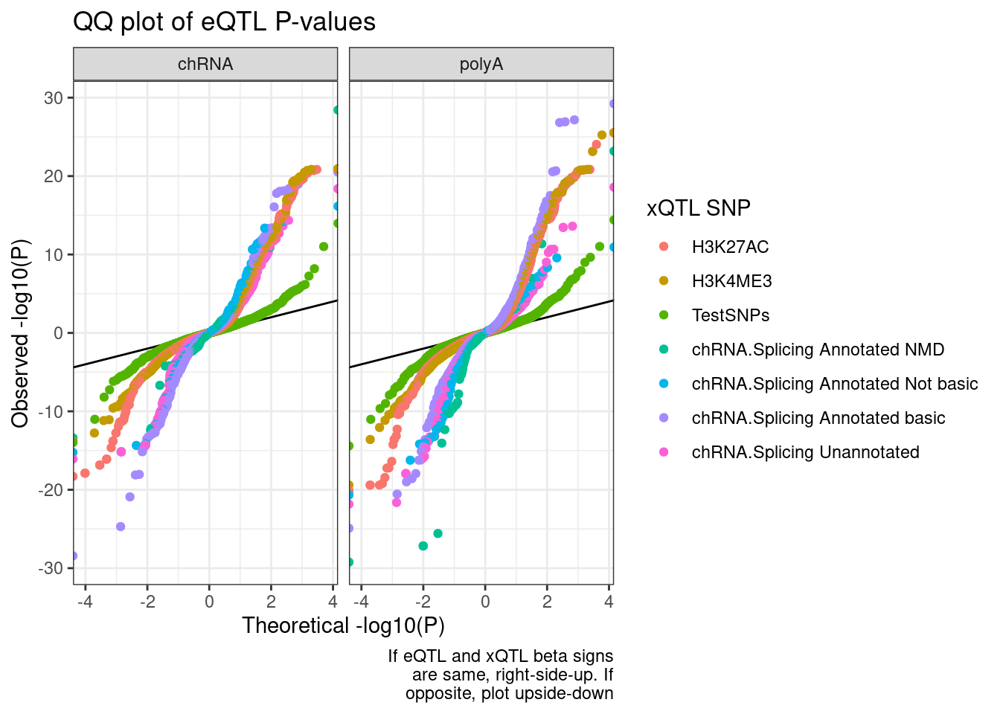

Does intron retention down regulate gene expression
Last updated: 2022-10-26
Checks: 6 1
Knit directory: ChromatinSplicingQTLs/analysis/
This reproducible R Markdown analysis was created with workflowr (version 1.6.2). The Checks tab describes the reproducibility checks that were applied when the results were created. The Past versions tab lists the development history.
The R Markdown file has unstaged changes. To know which version of the R Markdown file created these results, you’ll want to first commit it to the Git repo. If you’re still working on the analysis, you can ignore this warning. When you’re finished, you can run wflow_publish to commit the R Markdown file and build the HTML.
Great job! The global environment was empty. Objects defined in the global environment can affect the analysis in your R Markdown file in unknown ways. For reproduciblity it’s best to always run the code in an empty environment.
The command set.seed(20191126) was run prior to running the code in the R Markdown file. Setting a seed ensures that any results that rely on randomness, e.g. subsampling or permutations, are reproducible.
Great job! Recording the operating system, R version, and package versions is critical for reproducibility.
Nice! There were no cached chunks for this analysis, so you can be confident that you successfully produced the results during this run.
Great job! Using relative paths to the files within your workflowr project makes it easier to run your code on other machines.
Great! You are using Git for version control. Tracking code development and connecting the code version to the results is critical for reproducibility.
The results in this page were generated with repository version 8df7e43. See the Past versions tab to see a history of the changes made to the R Markdown and HTML files.
Note that you need to be careful to ensure that all relevant files for the analysis have been committed to Git prior to generating the results (you can use wflow_publish or wflow_git_commit). workflowr only checks the R Markdown file, but you know if there are other scripts or data files that it depends on. Below is the status of the Git repository when the results were generated:
Ignored files:
Ignored: .DS_Store
Ignored: .Rhistory
Ignored: .Rproj.user/
Ignored: analysis/.Rhistory
Ignored: code/.DS_Store
Ignored: code/.RData
Ignored: code/._.DS_Store
Ignored: code/._README.md
Ignored: code/._report.html
Ignored: code/.ipynb_checkpoints/
Ignored: code/.snakemake/
Ignored: code/APA_Processing/
Ignored: code/Alignments/
Ignored: code/ChromHMM/
Ignored: code/ENCODE/
Ignored: code/ExpressionAnalysis/
Ignored: code/FastqFastp/
Ignored: code/FastqFastpSE/
Ignored: code/Genotypes/
Ignored: code/H3K36me3_CutAndTag.pdf
Ignored: code/IntronSlopes/
Ignored: code/Metaplots/
Ignored: code/Misc/
Ignored: code/MiscCountTables/
Ignored: code/Multiqc/
Ignored: code/Multiqc_chRNA/
Ignored: code/NonCodingRNA/
Ignored: code/NonCodingRNA_annotation/
Ignored: code/PeakCalling/
Ignored: code/Phenotypes/
Ignored: code/PlotGruberQTLs/
Ignored: code/PlotQTLs/
Ignored: code/ProCapAnalysis/
Ignored: code/QC/
Ignored: code/QTL_SNP_Enrichment/
Ignored: code/QTLs/
Ignored: code/RPKM_tables/
Ignored: code/ReferenceGenome/
Ignored: code/Rplots.pdf
Ignored: code/Session.vim
Ignored: code/SplicingAnalysis/
Ignored: code/TODO
Ignored: code/Tehranchi/
Ignored: code/bigwigs/
Ignored: code/bigwigs_FromNonWASPFilteredReads/
Ignored: code/config/.DS_Store
Ignored: code/config/._.DS_Store
Ignored: code/config/.ipynb_checkpoints/
Ignored: code/dag.pdf
Ignored: code/dag.png
Ignored: code/dag.svg
Ignored: code/debug.ipynb
Ignored: code/debug_python.ipynb
Ignored: code/deepTools/
Ignored: code/featureCounts/
Ignored: code/gwas_summary_stats/
Ignored: code/hyprcoloc/
Ignored: code/igv_session.xml
Ignored: code/log
Ignored: code/logs/
Ignored: code/notebooks/.ipynb_checkpoints/
Ignored: code/pi1/
Ignored: code/rules/.ipynb_checkpoints/
Ignored: code/rules/OldRules/
Ignored: code/rules/notebooks/
Ignored: code/scratch/
Ignored: code/scripts/.ipynb_checkpoints/
Ignored: code/scripts/GTFtools_0.8.0/
Ignored: code/scripts/__pycache__/
Ignored: code/scripts/liftOverBedpe/liftOverBedpe.py
Ignored: code/snakemake.dryrun.log
Ignored: code/snakemake.log
Ignored: code/snakemake.sbatch.log
Ignored: code/test.introns.bed
Ignored: code/test.introns2.bed
Ignored: data/.DS_Store
Ignored: data/._.DS_Store
Ignored: data/._20220414203249_JASPAR2022_combined_matrices_25818_jaspar.txt
Ignored: data/GWAS_catalog_summary_stats_sources/._list_gwas_summary_statistics_6_Apr_2022-10.csv
Ignored: data/GWAS_catalog_summary_stats_sources/._list_gwas_summary_statistics_6_Apr_2022-11.csv
Ignored: data/GWAS_catalog_summary_stats_sources/._list_gwas_summary_statistics_6_Apr_2022-2.csv
Ignored: data/GWAS_catalog_summary_stats_sources/._list_gwas_summary_statistics_6_Apr_2022-3.csv
Ignored: data/GWAS_catalog_summary_stats_sources/._list_gwas_summary_statistics_6_Apr_2022-4.csv
Ignored: data/GWAS_catalog_summary_stats_sources/._list_gwas_summary_statistics_6_Apr_2022-5.csv
Ignored: data/GWAS_catalog_summary_stats_sources/._list_gwas_summary_statistics_6_Apr_2022-6.csv
Ignored: data/GWAS_catalog_summary_stats_sources/._list_gwas_summary_statistics_6_Apr_2022-7.csv
Ignored: data/GWAS_catalog_summary_stats_sources/._list_gwas_summary_statistics_6_Apr_2022-8.csv
Ignored: data/GWAS_catalog_summary_stats_sources/._list_gwas_summary_statistics_6_Apr_2022.csv
Untracked files:
Untracked: code/snakemake_profiles/slurm/__pycache__/
Unstaged changes:
Modified: analysis/20221012_IntronRetentionAndExpressionConcordance.Rmd
Modified: code/scripts/GenometracksByGenotype
Note that any generated files, e.g. HTML, png, CSS, etc., are not included in this status report because it is ok for generated content to have uncommitted changes.
These are the previous versions of the repository in which changes were made to the R Markdown (analysis/20221012_IntronRetentionAndExpressionConcordance.Rmd) and HTML (docs/20221012_IntronRetentionAndExpressionConcordance.html) files. If you’ve configured a remote Git repository (see ?wflow_git_remote), click on the hyperlinks in the table below to view the files as they were in that past version.
| File | Version | Author | Date | Message |
|---|---|---|---|---|
| Rmd | 8df7e43 | Benjmain Fair | 2022-10-26 | update nb |
| html | 8df7e43 | Benjmain Fair | 2022-10-26 | update nb |
| Rmd | 61a245f | Benjmain Fair | 2022-10-24 | update nb |
| Rmd | c17b6b2 | Benjmain Fair | 2022-10-19 | add un qqnorm phenotypes |
| html | c17b6b2 | Benjmain Fair | 2022-10-19 | add un qqnorm phenotypes |
| Rmd | ef85e53 | Benjmain Fair | 2022-10-12 | update index |
| Rmd | 3201a19 | Benjmain Fair | 2022-10-12 | add IR notebook |
| html | 3201a19 | Benjmain Fair | 2022-10-12 | add IR notebook |
Intro
I previously showed that effect size directions for intron retention QTLs puzzingly positively correct with eQTLs (more intron retention = more expression). Somehow I think intron retention QTLs are often picking up on chromatin effects. Let’s break up the intron retention QTLs into groups by the location of the SNP (in a enhancer/promoter vs a splice site) and reassess the concordance of expression effects. I can also look at the same idea with normal leafcutter sQTLs, comparing introns by their annotation type. For example increase in splicing of annotated or “basic” tagged introns might generally increase expression, versus increase in unannoated or “NMD” tagged introns might decrease expression.
library(tidyverse)
library(data.table)
library(qvalue)First let’s make some basic plots establishing that chRNA has more unannoated and NMD-specific splicing.
NMD.transcript.introns <- read_tsv("../code/SplicingAnalysis/Annotations/NMD/NMD_trancsript_introns.bed.gz", col_names=c("chrom", "start", "stop", "name", "score", "strand")) %>%
mutate(stop=stop+1) %>%
unite(intron, chrom:stop, strand)
Non.NMD.transcript.introns <- read_tsv("../code/SplicingAnalysis/Annotations/NMD/NonNMD_trancsript_introns.bed.gz", col_names=c("chrom", "start", "stop", "name", "score", "strand")) %>%
mutate(stop=stop+1) %>%
unite(intron, chrom:stop, strand)
NMD.specific.introns <- setdiff(NMD.transcript.introns$intron, Non.NMD.transcript.introns$intron)
SpliceJunctionCountTables <- Sys.glob("../code/SplicingAnalysis/leafcutter/NormalizedPsiTables/PSI.JunctionCounts.*.bed.gz") %>%
setNames(str_replace(., "../code/SplicingAnalysis/leafcutter/NormalizedPsiTables/PSI.JunctionCounts.(.+?).bed.gz", "\\1")) %>%
lapply(read_tsv)
lapply(SpliceJunctionCountTables, dim)$Expression.Splicing
[1] 198246 468
$MetabolicLabelled.30min
[1] 198246 72
$MetabolicLabelled.60min
[1] 198246 72
$chRNA.Expression.Splicing
[1] 198246 93# SpliceJunctionCountTables$Expression.Splicing %>%
# mutate(Intron=paste(`#Chrom`, start, end, strand, sep="_")) %>%
# mutate(Is.NMD.Intron = Intron %in% NMD.specific.introns) %>%
# group_by(Is.NMD.Intron) %>%
# summarise_if(is.numeric, sum, na.rm = TRUE) %>%
# dplyr::select(-start, -end) %>%
# column_to_rownames("Is.NMD.Intron") %>%
# t()
Sum.NMD.Intron.Counts <- function(df){
df %>%
mutate(Intron=paste(`#Chrom`, start, end, strand, sep="_")) %>%
mutate(Is.NMD.Intron = Intron %in% NMD.specific.introns) %>%
group_by(Is.NMD.Intron) %>%
summarise_if(is.numeric, sum, na.rm = TRUE) %>%
dplyr::select(-start, -end) %>%
column_to_rownames("Is.NMD.Intron") %>%
t() %>%
as.data.frame() %>%
rownames_to_column("IndID") %>%
return()
}
lapply(SpliceJunctionCountTables, Sum.NMD.Intron.Counts) %>%
bind_rows(.id="Source") %>%
dplyr::rename(c("NotNMD"="FALSE", "NMD"="TRUE")) %>%
mutate(Fraction = NMD/(NMD+NotNMD)*100) %>%
ggplot(aes(x=Source, y=Fraction, color=Source)) +
geom_boxplot(outlier.position="none") +
geom_jitter() +
theme_bw()
| Version | Author | Date |
|---|---|---|
| c17b6b2 | Benjmain Fair | 2022-10-19 |
lapply(SpliceJunctionCountTables, Sum.NMD.Intron.Counts) %>%
bind_rows(.id="Source") %>%
dplyr::rename(c("NotNMD"="FALSE", "NMD"="TRUE")) %>%
mutate(TotalJunctionCounts = NMD+NotNMD) %>%
ggplot(aes(x=Source, y=TotalJunctionCounts, color=Source)) +
geom_boxplot(outlier.position="none") +
geom_jitter() +
theme_bw() +
labs(title="Total juncs per dataset", y="Total num juncs")
| Version | Author | Date |
|---|---|---|
| c17b6b2 | Benjmain Fair | 2022-10-19 |
Update:
Yang is asking for the following plots to follow up on this one:
- same plot with unannotated junctions
- instead of overall, compute % for each gene separately, and plot the CDF
Intron.Annotations.basic <- read_tsv("../code/SplicingAnalysis/regtools_annotate_combined/basic.bed.gz") %>%
filter(known_junction ==1) %>%
unite(intron, chrom, start, end, strand)
Introns.Annotations.comprehensive <- read_tsv("../code/SplicingAnalysis/regtools_annotate_combined/comprehensive.bed.gz") %>%
filter(known_junction ==1) %>%
unite(intron, chrom, start, end, strand)
Introns.Annotations.all <- read_tsv("../code/SplicingAnalysis/regtools_annotate_combined/comprehensive.bed.gz") %>%
unite(intron, chrom, start, end, strand)
AddIntronAnnotations <- function(df){
df %>%
mutate(intron = str_replace(junc, "^(.+):(.+?):(.+?):clu.+?_([+-])$", "\\1_\\2_\\3_\\4")) %>%
mutate(IntronAnnotation = case_when(
intron %in% NMD.specific.introns ~ "Annotated NMD",
intron %in% Intron.Annotations.basic$intron ~ "Annotated basic",
intron %in% Introns.Annotations.comprehensive$intron ~ "Annotated Not basic",
TRUE ~ "Unannotated"
)) %>%
dplyr::select(1:6, intron, IntronAnnotation, everything())
}
Long.table <- lapply(SpliceJunctionCountTables, AddIntronAnnotations) %>%
lapply(pivot_longer,names_to="Sample", values_to="Count", -c(1:8)) %>%
bind_rows(.id="Dataset")And now make those plots
P.i.dat <- Long.table %>%
group_by(Sample, Dataset, IntronAnnotation) %>%
summarise(SumCounts = sum(Count)) %>%
ungroup() %>%
group_by(Sample, Dataset) %>%
mutate(Percent = SumCounts / sum(SumCounts) * 100) %>%
ungroup()
P.i <- ggplot(P.i.dat, aes(x=Dataset, y=Percent, color=IntronAnnotation)) +
geom_jitter(alpha=0.2, size=0.5) +
geom_boxplot(outlier.shape=NA, color='black', fill=NA) +
facet_wrap(~IntronAnnotation, scales="free_y") +
theme_bw() +
theme(axis.text.x = element_text(angle = 45, vjust = 1, hjust=1)) +
labs(y="Percent of splice junction reads")
P.i
genes <- read_tsv("../code/ExpressionAnalysis/polyA/ExpressedGeneList.txt", col_names=c("chrom", "start", "stop", "name")) %>%
mutate(name = str_replace(name, "^(E.+?)\\..+$", "\\1"))
p.ii.dat.joined <- Introns.Annotations.all %>%
separate_rows(gene_id, sep = ",") %>%
mutate(gene_id = str_replace(gene_id, "^(E.+?)\\..+$", "\\1")) %>%
filter(gene_id %in% genes$name) %>%
inner_join(Long.table)
p.ii.dat <- p.ii.dat.joined %>%
group_by(gene_id, Dataset, IntronAnnotation) %>%
summarise(SumCounts = sum(Count, na.rm=F)) %>%
ungroup() %>%
group_by(Dataset, gene_id) %>%
mutate(Percent = SumCounts / sum(SumCounts, na.rm=F) * 100) %>%
ungroup()
p.ii <- ggplot(p.ii.dat, aes(x=Percent, color=Dataset)) +
stat_ecdf() +
facet_wrap(~IntronAnnotation) +
theme_bw() +
labs(y="ecdf (14000 ProteinCodingGenes)", x="Percent splice junctions within gene")
p.ii
ggsave("figure/orig/SpliceJunctionsByTypeAndDataset.pdf", P.i, height=4, width=5.5)
ggsave("figure/orig/SpliceJunctionsByGeneTypeAndDataset.pdf", p.ii, height=4, width=5.5)let’s prcoeed to reading in other files
PhenotypeAliases <- read_tsv("../data/Phenotypes_recode_for_Plotting.txt")
PC.ShortAliases <- PhenotypeAliases %>%
dplyr::select(PC, ShorterAlias) %>% deframe()
coloc.results <- read_tsv("../code/hyprcoloc/Results/ForColoc/MolColocStandard/results.txt.gz")
coloc.results.tidycolocalized <- read_tsv("../code/hyprcoloc/Results/ForColoc/MolColocStandard/tidy_results_OnlyColocalized.txt.gz") %>%
separate(phenotype_full, into=c("PC", "P"), sep=";")
finemap.snps.annotated <- read_tsv("../code/QTL_SNP_Enrichment/FinemapIntersections/MolColocStandard.bed.gz", col_names=c("SNPchrom", "SNPstart", "SNPstop", "SNP_iteration_locus", "FinemapPP", "AnnotationChrom", "AnnotationStart", "AnnotatioStop", "AnnotationClass", "Overlap")) %>%
dplyr::select(-Overlap)Count chromatin-colocalizing and splicing-colocalizing eQTLs, and recreate previous observation about concordant effects
coloc.results.tidycolocalized %>%
group_by(Locus, snp) %>%
filter(any(PC=="Expression.Splicing.Subset_YRI")) %>%
summarise(
ContainsChromatinEqtl = any(PC %in% c("H3K27AC", "H3K4ME1", "H3K4ME3")),
ContainsSqtl = any(PC %in% c("polyA.Splicing.Subset_YRI", "chRNA.Splicing", "chRNA.IER"))
) %>%
ggplot(aes(x=1, fill=paste(ContainsChromatinEqtl, ContainsSqtl))) +
geom_bar() +
labs(title="More chromatin localization with eQTLs than splicing", y="Number of colocalizing eQTLs") +
theme_classic() +
theme(axis.title.x=element_blank(),
axis.text.x=element_blank(),
axis.ticks.x=element_blank())
coloc.results.tidycolocalized %>%
group_by(Locus, snp) %>%
filter(any(PC=="Expression.Splicing.Subset_YRI")) %>%
ungroup() %>%
filter(PC %in% c("Expression.Splicing.Subset_YRI","H3K27AC", "H3K4ME1", "H3K4ME3", "polyA.Splicing.Subset_YRI", "chRNA.Splicing", "chRNA.IER")) %>%
left_join(., ., by=c("Locus", "snp")) %>%
filter(!((P.x == P.y) & (PC.x == PC.y))) %>%
group_by(Locus, snp) %>%
mutate(
ContainsChromatinEqtl = any(PC.x %in% c("H3K27AC", "H3K4ME1", "H3K4ME3")),
ContainsSqtl = any(PC.x %in% c("polyA.Splicing.Subset_YRI", "chRNA.Splicing", "chRNA.IER"))
) %>%
ungroup() %>%
mutate(Contains.eQTL_Contains.sQTL = paste(ContainsChromatinEqtl, ContainsSqtl)) %>%
group_by(Contains.eQTL_Contains.sQTL, PC.x, PC.y) %>%
summarise(cor = cor(beta.x, beta.y, method="spearman")) %>%
mutate(PC.x = recode(PC.x, !!!PC.ShortAliases)) %>%
mutate(PC.y = recode(PC.y, !!!PC.ShortAliases)) %>%
ggplot(aes(x=PC.x, y=PC.y, fill=cor)) +
geom_raster() +
scale_fill_gradient2() +
facet_wrap(~Contains.eQTL_Contains.sQTL) +
scale_x_discrete(expand=c(0,0)) +
scale_y_discrete(expand=c(0,0)) +
theme_classic() +
theme(axis.text.x = element_text(angle = 45, vjust = 1, hjust=1)) +
labs(x="TraitA Phenotype class", y="TraitB Phenotype class", fill="Spearman cor", title="Effect size correlation",
caption = "FacetTitle: IsChromatinQTL IsSplicingQTL")
| Version | Author | Date |
|---|---|---|
| 8df7e43 | Benjmain Fair | 2022-10-26 |
Now split QTLs by location of SNP as either in splice site, in enhancer/promoter, or neither
#annotation types
finemap.snps.annotated$AnnotationClass %>% unique() [1] "SpliceBranchpointRegion_0" "10_Txn_Elongation"
[3] "6_Weak_Enhancer" "SpliceDonor_0"
[5] "2_Weak_Promoter" "11_Weak_Txn"
[7] "1_Active_Promoter" "12_Repressed"
[9] "4_Strong_Enhancer" "13_Heterochrom/lo"
[11] "SpliceAcceptor_0" "SpliceBranchpointRegion_1"
[13] "ncRNA_coRNA" "ncRNA_pseudo"
[15] "9_Txn_Transition" "SpliceAcceptor_1"
[17] "ncRNA_srtRNA" "8_Insulator"
[19] "ncRNA_uaRNA" "5_Strong_Enhancer"
[21] "7_Weak_Enhancer" "SpliceDonor_1"
[23] "PAS_Region" "ncRNA_incRNA"
[25] "3_Poised_Promoter" "."
[27] "14_Repetitive/CNV" "ncRNA_ctRNA"
[29] "15_Repetitive/CNV" "ncRNA_lncRNA"
[31] "ncRNA_rtRNA" "ncRNA_snoRNA" coloc.results.tidycolocalized %>%
group_by(Locus, snp) %>%
filter(any(PC=="Expression.Splicing.Subset_YRI")) %>%
ungroup() %>%
filter(PC %in% c("Expression.Splicing.Subset_YRI","H3K27AC", "H3K4ME1", "H3K4ME3", "polyA.Splicing.Subset_YRI", "chRNA.Splicing", "chRNA.IER")) %>%
left_join(., ., by=c("Locus", "snp")) %>%
filter(!((P.x == P.y) & (PC.x == PC.y))) %>%
group_by(Locus, snp) %>%
mutate(
ContainsChromatinEqtl = any(PC.x %in% c("H3K27AC", "H3K4ME1", "H3K4ME3")),
ContainsSqtl = any(PC.x %in% c("polyA.Splicing.Subset_YRI", "chRNA.Splicing", "chRNA.IER"))
) %>%
ungroup() %>%
mutate(Contains.eQTL_Contains.sQTL = paste(ContainsChromatinEqtl, ContainsSqtl)) %>%
dplyr::select(-iteration.y) %>%
left_join(
finemap.snps.annotated %>%
dplyr::select(SNP_iteration_locus, FinemapPP, AnnotationClass) %>%
separate(SNP_iteration_locus, into=c("snp", "iteration.x", "Locus"), convert=T, sep="_")
) %>%
filter(FinemapPP >0.25) %>%
mutate(AnnotationSuperclass = case_when(
str_detect(AnnotationClass, "Splice.+_1") ~ "Annotated SS",
str_detect(AnnotationClass, "Splice.+_0$") ~ "Unannotated SS",
str_detect(AnnotationClass, "Enhancer") ~ "Enhancer",
str_detect(AnnotationClass, "Promoter") ~ "Promoter",
TRUE ~ "Other"
)) %>%
mutate(PC.x = recode(PC.x, !!!PC.ShortAliases)) %>%
mutate(PC.y = recode(PC.y, !!!PC.ShortAliases)) %>%
mutate(Contains.eQTL_Contains.sQTL = recode(Contains.eQTL_Contains.sQTL,
!!!c("TRUE TRUE"="hQTL+sQTL",
"TRUE FALSE"="hQTL only",
"FALSE TRUE"="sQTL only"))) %>%
group_by(Contains.eQTL_Contains.sQTL, PC.x, PC.y, AnnotationSuperclass) %>%
summarise(cor = cor(beta.x, beta.y, method="spearman"), n=n()) %>%
ggplot(aes(x=PC.x, y=PC.y, fill=cor)) +
geom_raster() +
geom_text(aes(label=n), size=1.5) +
scale_fill_gradient2() +
facet_grid(rows=vars(Contains.eQTL_Contains.sQTL), cols=vars(AnnotationSuperclass)) +
scale_x_discrete(expand=c(0,0)) +
scale_y_discrete(expand=c(0,0)) +
theme_classic() +
theme(axis.text.x = element_text(angle = 45, vjust = 1, hjust=1)) +
labs(x="TraitA Phenotype class", y="TraitB Phenotype class", fill="Spearman cor", title="Effect size correlation for eQTLs that coloc with something",
caption = str_wrap("FacetCols=Annotation class of SNP (Onlyfinemap PP >0.25 included). FacetRows=Type of eQTL"))
I’m quite surprised just by the numbers of hQTL eQTLs with high finemap PP in unannoated splice site regions. This is clearly a really big annotation set that also includes lots of enhancer regions. This unannoated splice site region was defined as at least one spliced read mapping across all the data. Perhaps I shouldn’t be surprised, as any region is sufficeintly transcribed (including enhancers) will at some rate have some splice sites.
And even among the 7 intron retention QTLs that coloc with an eQTL but not hQTL, and are finemapped to annotated splice sites, the the direction of effects is if anything opposite what I was expecting
coloc.results.tidycolocalized %>%
group_by(Locus, snp) %>%
filter(any(PC=="Expression.Splicing.Subset_YRI")) %>%
ungroup() %>%
filter(PC %in% c("Expression.Splicing.Subset_YRI","H3K27AC", "H3K4ME1", "H3K4ME3", "polyA.Splicing.Subset_YRI", "chRNA.Splicing", "chRNA.IER")) %>%
left_join(., ., by=c("Locus", "snp")) %>%
filter(!((P.x == P.y) & (PC.x == PC.y))) %>%
group_by(Locus, snp) %>%
mutate(
ContainsChromatinEqtl = any(PC.x %in% c("H3K27AC", "H3K4ME1", "H3K4ME3")),
ContainsSqtl = any(PC.x %in% c("polyA.Splicing.Subset_YRI", "chRNA.Splicing", "chRNA.IER"))
) %>%
ungroup() %>%
mutate(Contains.eQTL_Contains.sQTL = paste(ContainsChromatinEqtl, ContainsSqtl)) %>%
dplyr::select(-iteration.y) %>%
left_join(
finemap.snps.annotated %>%
dplyr::select(SNP_iteration_locus, FinemapPP, AnnotationClass) %>%
separate(SNP_iteration_locus, into=c("snp", "iteration.x", "Locus"), convert=T, sep="_")
) %>%
filter(FinemapPP >0.25) %>%
mutate(AnnotationSuperclass = case_when(
str_detect(AnnotationClass, "Splice.+_1") ~ "Annotated SS",
str_detect(AnnotationClass, "Splice.+_0$") ~ "Unannotated SS",
str_detect(AnnotationClass, "Enhancer") ~ "Enhancer",
str_detect(AnnotationClass, "Promoter") ~ "Promoter",
TRUE ~ "Other"
)) %>%
mutate(PC.x = recode(PC.x, !!!PC.ShortAliases)) %>%
mutate(PC.y = recode(PC.y, !!!PC.ShortAliases)) %>%
mutate(Contains.eQTL_Contains.sQTL = recode(Contains.eQTL_Contains.sQTL,
!!!c("TRUE TRUE"="hQTL+sQTL",
"TRUE FALSE"="hQTL only",
"FALSE TRUE"="sQTL only"))) %>%
filter(Contains.eQTL_Contains.sQTL=="sQTL only" & AnnotationSuperclass=="Annotated SS") %>%
ggplot(aes(x=beta.x, y=beta.y)) +
geom_point() +
geom_vline(xintercept=0) +
geom_hline(yintercept=0) +
facet_grid(rows=vars(PC.x), cols=vars(PC.y)) +
theme_bw() +
labs(x="TraitA Phenotype class", y="TraitB Phenotype class", title="Effect size correlation for eQTLs/sQTLs that are not hQTLs",
caption = str_wrap("Only SNPs with finemap PP > 0.25 in annotated splice site SNP included"))
| Version | Author | Date |
|---|---|---|
| c17b6b2 | Benjmain Fair | 2022-10-19 |
Note there are only a few points of chRNA.IR intron retention with SNPs in splice sites that coloc with eQTL.
Let’s check how these plots look for NMD-specific introns…
dat.to.plot <- coloc.results.tidycolocalized %>%
group_by(Locus, snp) %>%
filter(any(PC=="Expression.Splicing.Subset_YRI")) %>%
ungroup() %>%
filter(PC %in% c("Expression.Splicing.Subset_YRI","H3K27AC", "H3K4ME1", "H3K4ME3", "polyA.Splicing.Subset_YRI", "chRNA.Splicing", "chRNA.IER")) %>%
left_join(., ., by=c("Locus", "snp")) %>%
filter(!((P.x == P.y) & (PC.x == PC.y))) %>%
group_by(Locus, snp) %>%
mutate(
ContainsChromatinEqtl = any(PC.x %in% c("H3K27AC", "H3K4ME1", "H3K4ME3")),
ContainsSqtl = any(PC.x %in% c("polyA.Splicing.Subset_YRI", "chRNA.Splicing", "chRNA.IER"))
) %>%
ungroup() %>%
mutate(Contains.eQTL_Contains.sQTL = paste(ContainsChromatinEqtl, ContainsSqtl)) %>%
dplyr::select(-iteration.y) %>%
left_join(
finemap.snps.annotated %>%
dplyr::select(SNP_iteration_locus, FinemapPP, AnnotationClass) %>%
separate(SNP_iteration_locus, into=c("snp", "iteration.x", "Locus"), convert=T, sep="_")
) %>%
filter(FinemapPP >0.25) %>%
mutate(AnnotationSuperclass = case_when(
str_detect(AnnotationClass, "Splice.+_1") ~ "Annotated SS",
str_detect(AnnotationClass, "Splice.+_0$") ~ "Unannotated SS",
str_detect(AnnotationClass, "Enhancer") ~ "Enhancer",
str_detect(AnnotationClass, "Promoter") ~ "Promoter",
TRUE ~ "Other"
)) %>%
mutate(PC.x = recode(PC.x, !!!PC.ShortAliases)) %>%
mutate(PC.y = recode(PC.y, !!!PC.ShortAliases)) %>%
mutate(Contains.eQTL_Contains.sQTL = recode(Contains.eQTL_Contains.sQTL,
!!!c("TRUE TRUE"="hQTL+sQTL",
"TRUE FALSE"="hQTL only",
"FALSE TRUE"="sQTL only"))) %>%
filter(Contains.eQTL_Contains.sQTL=="sQTL only") %>%
mutate(New.x = str_replace(P.x, "^(.+?):(.+?):(.+?):.+?_([-+])$", "chr\\1_\\2_\\3_\\4")) %>%
mutate(New.y = str_replace(P.x, "^(.+?):(.+?):(.+?):.+?_([-+])$", "chr\\1_\\2_\\3_\\4")) %>%
mutate(ContainsNMDJunc = (New.x %in% NMD.specific.introns) | (New.y %in% NMD.specific.introns)) %>%
arrange(ContainsNMDJunc)
ggplot(dat.to.plot, aes(x=beta.x, y=beta.y, color=ContainsNMDJunc)) +
geom_point(alpha=0.5) +
geom_vline(xintercept=0) +
geom_hline(yintercept=0) +
geom_smooth(method='lm') +
facet_grid(rows=vars(PC.x), cols=vars(PC.y)) +
theme_bw() +
labs(x="TraitA Phenotype class", y="TraitB Phenotype class", caption="Effect size correlation for eQTLs/sQTLs that are not hQTLs", title="sQTLs that increase annotated NMD junctions coloc with downward eQTLs")
So there’s clearly a negative correlation between NMD-specific intron splicing and expression. But there’s only so many NMD introns annotated, and I expect a lot of splice changes due to genetic variation to be unannotated. Additionally, a lot of the red dots might the necessary down-regulated junctions when a NMD-junction gets up-regulated.
Let’s plot all the blue points with pygenometracks
dir.create("../code/scratch/PlotNMDsQTLeQTLs/")
dat.to.plot.filtered <- dat.to.plot %>%
filter(ContainsNMDJunc) %>%
filter(PC.y %in% "Expression_polyA") %>%
distinct(Locus, .keep_all=T)
#Write out all juncs in clusters
dat.to.plot.filtered %>%
mutate(gid = str_replace(P.x, "^(.+?):.+?:.+?:(.+?)", "chr\\1_\\2")) %>%
inner_join(
SpliceJunctionCountTables$Expression.Splicing %>% dplyr::select(junc, gid)
) %>%
dplyr::select(junc) %>%
separate(junc, into=c("chrom", "start", "stop", "name"), sep=":", convert=T) %>%
arrange(chrom, start, stop) %>%
write_tsv("../code/scratch/PlotNMDsQTLeQTLs/.juncs.bed")
# # Write out NMD introns
# dat.to.plot.filtered %>%
# dplyr::select(junc = P.x) %>%
# separate(junc, into=c("chrom", "start", "stop", "name"), sep=":", convert=T) %>%
# mutate(chrom=paste0("chr", chrom)) %>%
# dplyr::select(chrom, start=newstart, stop) %>%
# arrange(chrom, start, stop) %>%
# write_tsv("../code/scratch/PlotNMDsQTLeQTLs/.NMD.introns.bed", col_names = F)
#
# # Write out ini file for NMD introns track
# fileConn<-file("../code/scratch/PlotNMDsQTLeQTLs/.NMD.introns.ini")
# writeLines(c("[NMD.introns]","file_type = bed", "type = vlines", "color=red","file = scratch/PlotNMDsQTLeQTLs/.NMD.introns.bed"), con=fileConn)
# close(fileConn)
# Write out NMD introns
dat.to.plot.filtered %>%
dplyr::select(junc = P.x) %>%
separate(junc, into=c("chrom", "start", "stop", "name"), sep=":", convert=T) %>%
mutate(chrom=paste0("chr", chrom)) %>%
arrange(chrom, start, stop) %>%
write_tsv("../code/scratch/PlotNMDsQTLeQTLs/.NMD.introns.bed", col_names = F)
# Write out ini file for NMD introns track
fileConn<-file("../code/scratch/PlotNMDsQTLeQTLs/.NMD.introns.ini")
writeLines(c("[NMD.introns]","file_type = bed", "color=red","file = scratch/PlotNMDsQTLeQTLs/.NMD.introns.bed"), con=fileConn)
close(fileConn)
# Write out bash script
dat.to.plot.filtered %>%
separate(P.x, into=c("chrom", "start", "stop", "name"), sep=":", convert=T) %>%
mutate(chrom=paste0("chr", chrom)) %>%
mutate(min=start-10000, max=stop+10000) %>%
mutate(SnpPos = str_replace(snp, "^(.+?:.+?):.+?:.+?$", "chr\\1")) %>%
mutate(rn = str_pad(row_number(), 2, pad=0)) %>%
mutate(cmd = str_glue("python scripts/GenometracksByGenotype/AggregateBigwigsForPlotting.py --VCF Genotypes/1KG_GRCh38/Autosomes.vcf.gz --SnpPos {SnpPos} --GroupSettingsFile Metaplots/bwGroups.tsv --BigwigList Metaplots/bwList.tsv --Normalization WholeGenome --Region {chrom}:{min}-{max} --BigwigListType KeyFile --OutputPrefix scratch/PlotNMDsQTLeQTLs/. -v --Bed12GenesToIni scripts/GenometracksByGenotype/PremadeTracks/gencode.v26.FromGTEx.genes.bed12.gz --FilterJuncsByBed scratch/PlotNMDsQTLeQTLs/.juncs.bed\npyGenomeTracks --tracks <(cat scratch/PlotNMDsQTLeQTLs/.tracks.ini scratch/PlotNMDsQTLeQTLs/.NMD.introns.ini) --out scratch/PlotNMDsQTLeQTLs/Plot_{rn}_{Locus}.pdf --region {chrom}:{min}-{max} --trackLabelFraction 0.15\n\n")) %>%
select(cmd) %>%
write.table("../code/scratch/PlotNMDsQTLeQTLs/MakePlots.sh", quote=F, row.names = F, col.names = F)..And plot them
conda activate GenometracksByGenotype
cd /project2/yangili1/bjf79/ChromatinSplicingQTLs/code
bash scratch/PlotNMDsQTLeQTLs/MakePlots.sh
And Let’s also expand these results by taking all NMD sQTLs and consider the beta on gene expression…
sQTLs <- c("../code/QTLs/QTLTools/polyA.Splicing.Subset_YRI/PermutationPassForColoc.txt.gz", "../code/QTLs/QTLTools/chRNA.Splicing/PermutationPassForColoc.txt.gz") %>%
setNames(str_replace(., "../code/QTLs/QTLTools/(.+?)/PermutationPassForColoc.txt.gz", "\\1")) %>%
lapply(fread) %>%
bind_rows(.id="source") %>%
mutate(gene = str_replace(phe_id, ".+:(EN.+?)$", "\\1")) %>%
mutate(intron = str_replace(phe_id, "^(.+):(.+?):(.+?):clu.+?_([+-]):EN.+$", "chr\\1_\\2_\\3_\\4")) %>%
group_by(source) %>%
mutate(q = qvalue(adj_emp_pval)$qvalues) %>%
ungroup()
eQTLs <- c("../code/QTLs/QTLTools/Expression.Splicing.Subset_YRI/PermutationPassForColoc.txt.gz", "../code/QTLs/QTLTools/chRNA.Expression.Splicing/PermutationPassForColoc.txt.gz") %>%
setNames(str_replace(., "../code/QTLs/QTLTools/(.+?)/PermutationPassForColoc.txt.gz", "\\1")) %>%
lapply(fread) %>%
bind_rows(.id="source") %>%
mutate(gene = str_replace(phe_id, ".+:(EN.+?)$", "\\1")) %>%
group_by(source) %>%
mutate(q = qvalue(adj_emp_pval)$qvalues) %>%
ungroup()
H3K4me3.QTLs <- c("../code/QTLs/QTLTools/H3K4ME3/PermutationPassForColoc.txt.gz") %>%
setNames(str_replace(., "../code/QTLs/QTLTools/(.+?)/PermutationPassForColoc.txt.gz", "\\1")) %>%
lapply(fread) %>%
bind_rows(.id="source") %>%
mutate(gene = str_replace(phe_id, ".+:(EN.+?)$", "\\1")) %>%
mutate(gene_peak = str_replace(phe_id, "^(.+?):(.+?)$", "\\2;\\1")) %>%
group_by(source) %>%
mutate(q = qvalue(adj_emp_pval)$qvalues) %>%
ungroup()
PeaksToTSS <- Sys.glob("../code/Misc/PeaksClosestToTSS/*_assigned.tsv.gz") %>%
setNames(str_replace(., "../code/Misc/PeaksClosestToTSS/(.+?)_assigned.tsv.gz", "\\1")) %>%
lapply(read_tsv) %>%
bind_rows(.id="ChromatinMark") %>%
mutate(GenePeakPair = paste(gene, peak, sep = ";")) %>%
distinct(ChromatinMark, peak, gene, .keep_all=T)
inner_join(eQTLs, sQTLs, by="gene", suffix=c(".eQTL", ".sQTL")) %>%
mutate(Is.NMD.intron = intron %in% NMD.specific.introns) %>%
filter(q.eQTL < 0.1 & q.sQTL < 0.1) %>%
mutate(source.eQTL = recode(source.eQTL, !!!c("polyA.Expression.YRI"="Expression.Splicing.Subset_YRI", "chRNA.Expression"="chRNA.Expression.Splicing"))) %>%
arrange(Is.NMD.intron) %>%
ggplot(aes(x=slope.eQTL, y=slope.sQTL, color=Is.NMD.intron)) +
geom_point(alpha=0.5) +
geom_vline(xintercept=0) +
geom_hline(yintercept=0) +
geom_smooth(method='lm') +
facet_grid(rows = vars(source.eQTL), cols=vars(source.sQTL)) +
theme_bw() +
labs(title="genetic effects of NMD introns and host gene expression", x="beta, eQTL", y="beta, sQTL", caption="Only FDR<10% sQTLs and eQTLs plotted")
inner_join(eQTLs, H3K4me3.QTLs, by="gene", suffix=c(".eQTL", ".sQTL")) %>%
filter(gene_peak %in% PeaksToTSS$GenePeakPair) %>%
filter(q.eQTL < 0.1 & q.sQTL < 0.1) %>%
mutate(source.eQTL = recode(source.eQTL, !!!c("polyA.Expression.YRI"="Expression.Splicing.Subset_YRI", "chRNA.Expression"="chRNA.Expression.Splicing"))) %>%
ggplot(aes(x=slope.eQTL, y=slope.sQTL)) +
geom_point(alpha=0.5) +
geom_vline(xintercept=0) +
geom_hline(yintercept=0) +
geom_smooth(method='lm') +
facet_grid(rows = vars(source.eQTL), cols=vars(source.sQTL)) +
theme_bw() +
labs(title="genetic effects of H3K4ME promoters and host gene expression", x="beta, eQTL", y="beta, H3K4ME3 QTL", caption="Only FDR<10% H3K4ME3 QTLs and eQTLs plotted")
Wait, upon further thought, I think I didn’t make the above plots correctly. I was just plotting the beta for the topSNP for each feature, not the same SNP between sQTL and eQTL, so the directions of SNP effect (which are always ALT/REF) might not be polarized the same way.
TopSNPEffects.ByPairs <- fread("../code/pi1/PairwisePi1Traits.P.all.txt.gz")
TopSNPEffects.ByPairs %>%
filter(
(PC1 %in% c("chRNA.Expression.Splicing", "Expression.Splicing.Subset_YRI")) &
(PC2 %in% c("polyA.Splicing.Subset_YRI", "chRNA.Splicing")) &
(FDR.x < 0.1) &
(FDR.y < 0.1)) %>%
mutate(source.eQTL = recode(PC1, !!!c("Expression.Splicing.Subset_YRI"="polyA.Expression.YRI", "chRNA.Expression.Splicing"="chRNA.Expression"))) %>%
rename(source.sQTL=PC2) %>%
mutate(intron = str_replace(P2, "^(.+):(.+?):(.+?):clu.+?_([+-])$", "chr\\1_\\2_\\3_\\4")) %>%
mutate(Is.NMD.intron = intron %in% NMD.specific.introns) %>%
arrange(Is.NMD.intron) %>%
ggplot(aes(x=beta.x, y=trait.x.beta.in.y
, color=Is.NMD.intron)) +
geom_point(alpha=0.5) +
geom_vline(xintercept=0) +
geom_hline(yintercept=0) +
geom_smooth(method='lm') +
facet_grid(rows = vars(source.eQTL), cols=vars(source.sQTL)) +
theme_bw() +
labs(title="genetic effects of NMD introns and host gene expression", x="beta, eQTL", y="beta, sQTL", caption="Only FDR<10% sQTLs and eQTLs plotted. sQTL effects are relative to top eQTL SNP")
TopSNPEffects.ByPairs %>%
filter(
(PC2 %in% c("chRNA.Expression.Splicing", "Expression.Splicing.Subset_YRI")) &
(PC1 %in% c("polyA.Splicing.Subset_YRI", "chRNA.Splicing")) &
(FDR.x < 0.1) &
(FDR.y < 0.1)) %>%
mutate(source.eQTL = recode(PC2, !!!c("Expression.Splicing.Subset_YRI"="polyA.Expression.YRI", "chRNA.Expression.Splicing"="chRNA.Expression"))) %>%
rename(source.sQTL=PC1) %>%
mutate(intron = str_replace(P1, "^(.+):(.+?):(.+?):clu.+?_([+-])$", "chr\\1_\\2_\\3_\\4")) %>%
mutate(Is.NMD.intron = intron %in% NMD.specific.introns) %>%
arrange(Is.NMD.intron) %>%
ggplot(aes(y=beta.x, x=trait.x.beta.in.y
, color=Is.NMD.intron)) +
geom_point(alpha=0.5) +
geom_vline(xintercept=0) +
geom_hline(yintercept=0) +
geom_smooth(method='lm') +
facet_grid(rows = vars(source.eQTL), cols=vars(source.sQTL)) +
theme_bw() +
labs(title="genetic effects of NMD introns and host gene expression", x="beta, eQTL", y="beta, sQTL", caption="Only FDR<10% sQTLs and eQTLs plotted. eQTL effects are relative to top sQTL SNP")
| Version | Author | Date |
|---|---|---|
| 8df7e43 | Benjmain Fair | 2022-10-26 |
I think I’ll want to further break down introns into - annotatic basic transcripts - annotated transripts (not NMD) - annotated NMD - unannotated
First read in the annotations…
Intron.Annotations.basic <- read_tsv("../code/SplicingAnalysis/regtools_annotate_combined/basic.bed.gz") %>%
filter(known_junction ==1) %>%
unite(intron, chrom, start, end, strand)
Introns.Annotations.comprehensive <- read_tsv("../code/SplicingAnalysis/regtools_annotate_combined/comprehensive.bed.gz") %>%
filter(known_junction ==1) %>%
unite(intron, chrom, start, end, strand)Now remake the plots
TopSNPEffects.ByPairs %>%
filter(
(PC1 %in% c("chRNA.Expression.Splicing", "Expression.Splicing.Subset_YRI")) &
(PC2 %in% c("polyA.Splicing.Subset_YRI", "chRNA.Splicing")) &
(FDR.x < 0.1) &
(FDR.y < 0.1)) %>%
mutate(source.eQTL = recode(PC1, !!!c("Expression.Splicing.Subset_YRI"="polyA.Expression.YRI", "chRNA.Expression.Splicing"="chRNA.Expression"))) %>%
rename(source.sQTL=PC2) %>%
mutate(intron = str_replace(P2, "^(.+):(.+?):(.+?):clu.+?_([+-])$", "chr\\1_\\2_\\3_\\4")) %>%
mutate(IntronAnnotation = case_when(
intron %in% NMD.specific.introns ~ "Annotated NMD",
intron %in% Intron.Annotations.basic$intron ~ "Annotated basic",
intron %in% Introns.Annotations.comprehensive$intron ~ "Annotated Not basic",
TRUE ~ "Unannotated"
)) %>%
count(IntronAnnotation) %>%
ggplot(aes(x=IntronAnnotation, y=n, fill=IntronAnnotation)) +
geom_col() +
theme_bw() +
theme(axis.text.x = element_text(angle = 45, vjust = 1, hjust=1)) +
labs(title="Number sQTLs that are in an eGene", x="Intron Type", caption="FDR10% for sQTL and eQTL")
TopSNPEffects.ByPairs %>%
filter(
(PC1 %in% c("chRNA.Expression.Splicing", "Expression.Splicing.Subset_YRI")) &
(PC2 %in% c("polyA.Splicing.Subset_YRI", "chRNA.Splicing")) &
(FDR.x < 0.1) &
(FDR.y < 0.1)) %>%
mutate(source.eQTL = recode(PC1, !!!c("Expression.Splicing.Subset_YRI"="polyA.Expression.YRI", "chRNA.Expression.Splicing"="chRNA.Expression"))) %>%
rename(source.sQTL=PC2) %>%
mutate(intron = str_replace(P2, "^(.+):(.+?):(.+?):clu.+?_([+-])$", "chr\\1_\\2_\\3_\\4")) %>%
mutate(IntronAnnotation = case_when(
intron %in% NMD.specific.introns ~ "Annotated NMD",
intron %in% Intron.Annotations.basic$intron ~ "Annotated basic",
intron %in% Introns.Annotations.comprehensive$intron ~ "Annotated Not basic",
TRUE ~ "Unannotated"
)) %>%
ggplot(aes(y=beta.x, x=trait.x.beta.in.y
, color=IntronAnnotation)) +
geom_point(alpha=0.5) +
geom_vline(xintercept=0) +
geom_hline(yintercept=0) +
geom_smooth(method='lm') +
facet_grid(rows = vars(source.eQTL), cols=vars(source.sQTL)) +
theme_bw() +
labs(title="genetic effects of NMD introns and host gene expression", x="beta, sQTL", y="beta, eQTL", caption="Only FDR<10% sQTLs and eQTLs plotted. sQTL effects are relative to top eQTL SNP")
| Version | Author | Date |
|---|---|---|
| 8df7e43 | Benjmain Fair | 2022-10-26 |
TopSNPEffects.ByPairs %>%
filter(
(PC2 %in% c("chRNA.Expression.Splicing", "Expression.Splicing.Subset_YRI")) &
(PC1 %in% c("polyA.Splicing.Subset_YRI", "chRNA.Splicing")) &
(FDR.x < 0.1) &
(FDR.y < 0.1)) %>%
mutate(source.eQTL = recode(PC2, !!!c("Expression.Splicing.Subset_YRI"="polyA.Expression.YRI", "chRNA.Expression.Splicing"="chRNA.Expression"))) %>%
rename(source.sQTL=PC1) %>%
mutate(intron = str_replace(P1, "^(.+):(.+?):(.+?):clu.+?_([+-])$", "chr\\1_\\2_\\3_\\4")) %>%
mutate(IntronAnnotation = case_when(
intron %in% NMD.specific.introns ~ "Annotated NMD",
intron %in% Intron.Annotations.basic$intron ~ "Annotated basic",
intron %in% Introns.Annotations.comprehensive$intron ~ "Annotated Not basic",
TRUE ~ "Unannotated"
)) %>%
ggplot(aes(y=beta.x, x=trait.x.beta.in.y
, color=IntronAnnotation)) +
geom_point(alpha=0.5) +
geom_vline(xintercept=0) +
geom_hline(yintercept=0) +
geom_smooth(method='lm') +
facet_grid(rows = vars(source.eQTL), cols=vars(source.sQTL)) +
theme_bw() +
labs(title="genetic effects of NMD introns and host gene expression", x="beta, sQTL", y="beta, eQTL", caption="Only FDR<10% sQTLs and eQTLs plotted. eQTL effects are relative to top sQTL SNP")
| Version | Author | Date |
|---|---|---|
| 8df7e43 | Benjmain Fair | 2022-10-26 |
There’s a few things I could do to improve this… one being that the effect sizes are standardized and therefore hard to interpret. Plotting eQTL effect sizes as logFC and splicing effect sizes as deltaPSI could be more interpretable. Also, Yang suggesting exploring these ideas by plotting things as QQ plots… let’s do that now…
For example, let’s plot eQTL P-values for different groups of SNPs, including sQTLs, hQTLs, etc…
test.SNPs <- paste0("../code/QTLs/QTLTools/", c("chRNA.Expression.Splicing", "Expression.Splicing.Subset_YRI"), "/NominalPassForColoc.RandomSamplePvals.txt.gz") %>%
setNames(str_replace(., "../code/QTLs/QTLTools/(.+?)/NominalPassForColoc.RandomSamplePvals.txt.gz", "\\1")) %>%
lapply(read_tsv, col_names=c("trait.x.p.in.y")) %>%
bind_rows(.id="PC2") %>%
mutate(PC1 = "TestSNPs") %>%
group_by(PC2) %>%
sample_n(5000) %>%
ungroup()
TopSNPEffects.ByPairs %>%
filter(
(PC2 %in% c("chRNA.Expression.Splicing", "Expression.Splicing.Subset_YRI")) &
(PC1 %in% c("polyA.Splicing.Subset_YRI", "chRNA.Splicing", "H3K4ME3", "H3K27AC")) &
(FDR.x < 0.1)) %>%
bind_rows(test.SNPs) %>%
mutate(intron = case_when(
PC1 %in% c("polyA.Splicing.Subset_YRI", "chRNA.Splicing") ~ str_replace(P1, "^(.+):(.+?):(.+?):clu.+?_([+-])$", "chr\\1_\\2_\\3_\\4"),
TRUE ~ NA_character_)) %>%
mutate(IntronAnnotation = case_when(
intron %in% NMD.specific.introns ~ "Annotated NMD",
intron %in% Intron.Annotations.basic$intron ~ "Annotated basic",
intron %in% Introns.Annotations.comprehensive$intron ~ "Annotated Not basic",
!is.na(intron) ~ "Unannotated",
TRUE ~ ""
)) %>%
mutate(SnpSet = paste(PC1, IntronAnnotation)) %>%
group_by(SnpSet, PC2) %>%
mutate(ExpectedP = percent_rank(trait.x.p.in.y)) %>%
ungroup() %>%
ggplot(aes(x=-log10(ExpectedP), y=-log10(trait.x.p.in.y), color=SnpSet)) +
geom_abline() +
geom_point() +
facet_wrap(~PC2) +
theme_bw() +
labs(title="QQ plot of eQTL P-values", color="xQTL SNP", y="-log10(P)")
| Version | Author | Date |
|---|---|---|
| 8df7e43 | Benjmain Fair | 2022-10-26 |
Ok, hmm, is that even informative.. Well there is eQTL enrichment in all the types of QTLs tested. Let’s try breaking out the QQ plots by concordance of effect directions… I’ll plot the two mirror image QQ plots by concordance of effect directions
QQ.plot.dat <- TopSNPEffects.ByPairs %>%
filter(
(PC2 %in% c("chRNA.Expression.Splicing", "Expression.Splicing.Subset_YRI")) &
(PC1 %in% c("polyA.Splicing.Subset_YRI", "chRNA.Splicing", "H3K4ME3", "H3K27AC")) &
(FDR.x < 0.1)) %>%
mutate(intron = case_when(
PC1 %in% c("polyA.Splicing.Subset_YRI", "chRNA.Splicing") ~ str_replace(P1, "^(.+):(.+?):(.+?):clu.+?_([+-])$", "chr\\1_\\2_\\3_\\4"),
TRUE ~ NA_character_)) %>%
mutate(IntronAnnotation = case_when(
intron %in% NMD.specific.introns ~ "Annotated NMD",
intron %in% Intron.Annotations.basic$intron ~ "Annotated basic",
intron %in% Introns.Annotations.comprehensive$intron ~ "Annotated Not basic",
!is.na(intron) ~ "Unannotated",
TRUE ~ ""
)) %>%
mutate(SnpSet = paste(PC1, IntronAnnotation)) %>%
mutate(Concordance = if_else(sign(beta.x)==sign(beta.y), "Concordant", "Discordant")) %>%
bind_rows(
test.SNPs %>%
mutate(Concordance = "Concordant", SnpSet=PC1),
test.SNPs %>%
mutate(Concordance = "Discordant", SnpSet=PC1)
) %>%
group_by(SnpSet, PC2, Concordance) %>%
mutate(ExpectedP = percent_rank(trait.x.p.in.y)) %>%
ungroup() %>%
mutate(Sign = recode(Concordance, !!!c("Discordant"=-1, "Concordant"=1))) %>%
mutate(PC2 = recode(PC2, !!!c("chRNA.Expression.Splicing"="chRNA", "Expression.Splicing.Subset_YRI"="polyA"))) %>%
arrange(desc(trait.x.p.in.y))
ggplot(QQ.plot.dat, aes(x=-log10(ExpectedP)*Sign, y=-log10(trait.x.p.in.y)*Sign, color=SnpSet)) +
geom_abline() +
geom_point() +
facet_wrap(~PC2) +
theme_bw() +
labs(title="QQ plot of eQTL P-values", color="xQTL SNP", y="Observed -log10(P)", x="Theoretical -log10(P)", caption=str_wrap("If eQTL and xQTL beta signs are same, right-side-up. If opposite, plot upside-down", 30))
| Version | Author | Date |
|---|---|---|
| 8df7e43 | Benjmain Fair | 2022-10-26 |
I like these plots but there is just too many colors… Let’s just plot sQTLs from polyA, to cut down on colors. Then seperately we can do just sQTLs from chRNA…
QQ.plot.dat %>%
filter(!str_detect(SnpSet, "chRNA")) %>%
ggplot(aes(x=-log10(ExpectedP)*Sign, y=-log10(trait.x.p.in.y)*Sign, color=SnpSet)) +
geom_abline() +
geom_point() +
facet_wrap(~PC2) +
theme_bw() +
labs(title="QQ plot of eQTL P-values", color="xQTL SNP", y="Observed -log10(P)", x="Theoretical -log10(P)", caption=str_wrap("If eQTL and xQTL beta signs are same, right-side-up. If opposite, plot upside-down", 30))
| Version | Author | Date |
|---|---|---|
| 8df7e43 | Benjmain Fair | 2022-10-26 |
QQ.plot.dat %>%
filter(!str_detect(SnpSet, "polyA")) %>%
ggplot(aes(x=-log10(ExpectedP)*Sign, y=-log10(trait.x.p.in.y)*Sign, color=SnpSet)) +
geom_abline() +
geom_point() +
facet_wrap(~PC2) +
theme_bw() +
labs(title="QQ plot of eQTL P-values", color="xQTL SNP", y="Observed -log10(P)", x="Theoretical -log10(P)", caption=str_wrap("If eQTL and xQTL beta signs are same, right-side-up. If opposite, plot upside-down", 30))
| Version | Author | Date |
|---|---|---|
| 8df7e43 | Benjmain Fair | 2022-10-26 |
enrichment of NMD sQTLs in eQTLs
Another way to show this, which would look more significant I think is to ask what % of non-eQTL sQTL affect NMD junctions of all non-eQTL sQTLs versus the same for sQTLs that are eQTLs
TopSNPEffects.ByPairs %>%
filter(
(PC1 %in% c("chRNA.Expression.Splicing", "Expression.Splicing.Subset_YRI"))) %>%
# filter(
# (PC2 %in% c("chRNA.Expression.Splicing", "Expression.Splicing.Subset_YRI")) &
# (PC1 %in% c("polyA.Splicing.Subset_YRI", "chRNA.Splicing")) ) %>%
filter(FDR.x < 0.1) %>%
distinct(P1) %>% nrow()[1] 5358TopSNPEffects.ByPairs %>%
filter(
(PC1 %in% c("polyA.Splicing.Subset_YRI", "chRNA.Splicing")) ) %>%
distinct(GeneLocus) %>% nrow()[1] 2621datToPlot <- TopSNPEffects.ByPairs %>%
filter(
(PC2 %in% c("chRNA.Expression.Splicing", "Expression.Splicing.Subset_YRI")) &
(PC1 %in% c("polyA.Splicing.Subset_YRI", "chRNA.Splicing")) ) %>%
filter(FDR.x < 0.1) %>%
mutate(intron = str_replace(P1, "^(.+):(.+?):(.+?):clu.+?_([+-])$", "chr\\1_\\2_\\3_\\4")) %>%
mutate(IntronAnnotation = case_when(
intron %in% NMD.specific.introns ~ "Annotated NMD",
intron %in% Intron.Annotations.basic$intron ~ "Annotated basic",
intron %in% Introns.Annotations.comprehensive$intron ~ "Annotated Not basic",
TRUE ~ "Unannotated"
)) %>%
mutate(Is_HostGene_eQTL = if_else(FDR.y < 0.1, "eGene", "not eGene")) %>%
count(IntronAnnotation, Is_HostGene_eQTL) %>%
group_by(Is_HostGene_eQTL) %>%
mutate(Percent = n/sum(n)*100) %>%
mutate(rn = row_number()) %>%
ungroup()
ggplot(datToPlot, aes(x=Is_HostGene_eQTL, y=n, fill=IntronAnnotation)) +
geom_col(position="stack") +
geom_label(aes(label=signif(Percent, 3), vjust=rn), y=Inf) +
theme_bw() +
labs(y="Number sQTLs", caption="1406 eGenes identified in YRI with a test intron")
| Version | Author | Date |
|---|---|---|
| 8df7e43 | Benjmain Fair | 2022-10-26 |
Let’s also break the original plot by ncRNAs for SNP regions
coloc.results.tidycolocalized %>%
group_by(Locus, snp) %>%
filter(any(PC=="Expression.Splicing.Subset_YRI")) %>%
ungroup() %>%
filter(PC %in% c("Expression.Splicing.Subset_YRI","H3K27AC", "H3K4ME1", "H3K4ME3", "polyA.Splicing.Subset_YRI", "chRNA.Splicing", "chRNA.IER")) %>%
left_join(., ., by=c("Locus", "snp")) %>%
filter(!((P.x == P.y) & (PC.x == PC.y))) %>%
group_by(Locus, snp) %>%
mutate(
ContainsChromatinEqtl = any(PC.x %in% c("H3K27AC", "H3K4ME1", "H3K4ME3")),
ContainsSqtl = any(PC.x %in% c("polyA.Splicing.Subset_YRI", "chRNA.Splicing", "chRNA.IER"))
) %>%
ungroup() %>%
mutate(Contains.eQTL_Contains.sQTL = paste(ContainsChromatinEqtl, ContainsSqtl)) %>%
dplyr::select(-iteration.y) %>%
left_join(
finemap.snps.annotated %>%
dplyr::select(SNP_iteration_locus, FinemapPP, AnnotationClass) %>%
separate(SNP_iteration_locus, into=c("snp", "iteration.x", "Locus"), convert=T, sep="_")
) %>%
filter(FinemapPP >0.25) %>%
mutate(AnnotationSuperclass = case_when(
str_detect(AnnotationClass, "Splice.+_1") ~ "Annotated SS",
str_detect(AnnotationClass, "Splice.+_0$") ~ "Unannotated SS",
str_detect(AnnotationClass, "Enhancer") ~ "Enhancer",
str_detect(AnnotationClass, "Promoter") ~ "Promoter",
str_detect(AnnotationClass, "ncRNA") ~ AnnotationClass,
TRUE ~ "Other"
)) %>%
group_by(Contains.eQTL_Contains.sQTL, PC.x, PC.y, AnnotationSuperclass) %>%
summarise(cor = cor(beta.x, beta.y, method="spearman"), n=n()) %>%
mutate(PC.x = recode(PC.x, !!!PC.ShortAliases)) %>%
mutate(PC.y = recode(PC.y, !!!PC.ShortAliases)) %>%
mutate(Contains.eQTL_Contains.sQTL = recode(Contains.eQTL_Contains.sQTL,
!!!c("TRUE TRUE"="hQTL+sQTL",
"TRUE FALSE"="hQTL only",
"FALSE TRUE"="sQTL only"))) %>%
ggplot(aes(x=PC.x, y=PC.y, fill=cor)) +
geom_raster() +
geom_text(aes(label=n), size=1.5) +
scale_fill_gradient2() +
facet_grid(rows=vars(Contains.eQTL_Contains.sQTL), cols=vars(AnnotationSuperclass)) +
scale_x_discrete(expand=c(0,0)) +
scale_y_discrete(expand=c(0,0)) +
theme_classic() +
theme(axis.text.x = element_text(angle = 45, vjust = 1, hjust=1)) +
labs(x="TraitA Phenotype class", y="TraitB Phenotype class", fill="Spearman cor", title="Effect size correlation for eQTLs that coloc with something",
caption = str_wrap("FacetCols=Annotation class of SNP (Onlyfinemap PP >0.25 included). FacetRows=Type of eQTL"))
| Version | Author | Date |
|---|---|---|
| 8df7e43 | Benjmain Fair | 2022-10-26 |
Perhaps we should plot the same ideas but breaking out the introns into classes by whether we have some good reason to think it would be an NMD target (ie unannoated, and or annotated with nonsense mediated decay transcript tag)
coloc.results.tidycolocalized %>%
group_by(Locus, snp) %>%
filter(any(PC=="Expression.Splicing.Subset_YRI")) %>%
ungroup() %>%
filter(PC %in% c("Expression.Splicing.Subset_YRI","H3K27AC", "H3K4ME1", "H3K4ME3", "polyA.Splicing.Subset_YRI", "chRNA.Splicing", "chRNA.IER")) %>%
left_join(., ., by=c("Locus", "snp")) %>%
filter(!((P.x == P.y) & (PC.x == PC.y))) %>%
group_by(Locus, snp) %>%
mutate(
ContainsChromatinEqtl = any(PC.x %in% c("H3K27AC", "H3K4ME1", "H3K4ME3")),
ContainsSqtl = any(PC.x %in% c("polyA.Splicing.Subset_YRI", "chRNA.Splicing", "chRNA.IER"))
) %>%
ungroup() %>%
mutate(Contains.eQTL_Contains.sQTL = paste(ContainsChromatinEqtl, ContainsSqtl)) %>%
dplyr::select(-iteration.y) %>%
left_join(
finemap.snps.annotated %>%
dplyr::select(SNP_iteration_locus, FinemapPP, AnnotationClass) %>%
separate(SNP_iteration_locus, into=c("snp", "iteration.x", "Locus"), convert=T, sep="_")
) %>%
filter(FinemapPP >0.25) %>%
mutate(AnnotationSuperclass = case_when(
str_detect(AnnotationClass, "Splice.+_1") ~ "Annotated SS",
str_detect(AnnotationClass, "Splice.+_0$") ~ "Unannotated SS",
str_detect(AnnotationClass, "Enhancer") ~ "Enhancer",
str_detect(AnnotationClass, "Promoter") ~ "Promoter",
TRUE ~ "Other"
)) %>%
mutate(PC.x = recode(PC.x, !!!PC.ShortAliases)) %>%
mutate(PC.y = recode(PC.y, !!!PC.ShortAliases)) %>%
mutate(Contains.eQTL_Contains.sQTL = recode(Contains.eQTL_Contains.sQTL,
!!!c("TRUE TRUE"="hQTL+sQTL",
"TRUE FALSE"="hQTL only",
"FALSE TRUE"="sQTL only"))) %>%
filter(Contains.eQTL_Contains.sQTL=="sQTL only" & AnnotationSuperclass=="Annotated SS") %>%
ggplot(aes(x=beta.x, y=beta.y)) +
geom_point() +
geom_vline(xintercept=0) +
geom_hline(yintercept=0) +
facet_grid(rows=vars(PC.x), cols=vars(PC.y)) +
theme_bw() +
labs(x="TraitA Phenotype class", y="TraitB Phenotype class", title="Effect size correlation for eQTLs/sQTLs that are not hQTLs",
caption = str_wrap("Only SNPs with finemap PP > 0.25 in annotated splice site SNP included"))
| Version | Author | Date |
|---|---|---|
| 8df7e43 | Benjmain Fair | 2022-10-26 |
Write out bed files for meta QTL plot
As a side thing, I wrote a script to make metaQTL plots. That is, I lump the high/high allele genotypes for many QTLs and plot a metagene plot, along with the heterzygotes, and the low/low genotypes. This could be useful as an alternative to looking through a bunch of pygenometracks QTL plots. I think this list of eQTLs that coloc with hQTL only versus those that coloc with sQTL only would be a good test plot to look at. For example, I expect to see promoter effects at the hQTL eGenes but not so much at the sQTL eGenes, and definitely not at the sQTL eGenes with high finemapping probability as splice sites
sessionInfo()R version 3.6.1 (2019-07-05)
Platform: x86_64-pc-linux-gnu (64-bit)
Running under: CentOS Linux 7 (Core)
Matrix products: default
BLAS/LAPACK: /software/openblas-0.2.19-el7-x86_64/lib/libopenblas_haswellp-r0.2.19.so
locale:
[1] LC_CTYPE=en_US.UTF-8 LC_NUMERIC=C LC_TIME=C
[4] LC_COLLATE=C LC_MONETARY=C LC_MESSAGES=C
[7] LC_PAPER=C LC_NAME=C LC_ADDRESS=C
[10] LC_TELEPHONE=C LC_MEASUREMENT=C LC_IDENTIFICATION=C
attached base packages:
[1] stats graphics grDevices utils datasets methods base
other attached packages:
[1] qvalue_2.16.0 data.table_1.14.2 forcats_0.4.0 stringr_1.4.0
[5] dplyr_1.0.9 purrr_0.3.4 readr_1.3.1 tidyr_1.2.0
[9] tibble_3.1.7 ggplot2_3.3.6 tidyverse_1.3.0
loaded via a namespace (and not attached):
[1] httr_1.4.4 jsonlite_1.6 splines_3.6.1 R.utils_2.9.0
[5] modelr_0.1.8 assertthat_0.2.1 highr_0.9 cellranger_1.1.0
[9] yaml_2.2.0 pillar_1.7.0 backports_1.4.1 lattice_0.20-38
[13] glue_1.6.2 digest_0.6.20 promises_1.0.1 rvest_0.3.5
[17] colorspace_1.4-1 htmltools_0.5.3 httpuv_1.5.1 Matrix_1.2-18
[21] R.oo_1.22.0 plyr_1.8.4 pkgconfig_2.0.2 broom_1.0.0
[25] haven_2.3.1 scales_1.1.0 whisker_0.3-2 later_0.8.0
[29] git2r_0.26.1 mgcv_1.8-40 generics_0.1.3 farver_2.1.0
[33] ellipsis_0.3.2 withr_2.5.0 cli_3.3.0 magrittr_1.5
[37] crayon_1.3.4 readxl_1.3.1 evaluate_0.15 R.methodsS3_1.7.1
[41] fs_1.5.2 fansi_0.4.0 nlme_3.1-140 xml2_1.3.2
[45] tools_3.6.1 hms_0.5.3 lifecycle_1.0.1 munsell_0.5.0
[49] reprex_0.3.0 compiler_3.6.1 rlang_1.0.5 grid_3.6.1
[53] rstudioapi_0.14 labeling_0.3 rmarkdown_1.13 gtable_0.3.0
[57] DBI_1.1.0 reshape2_1.4.3 R6_2.4.0 lubridate_1.7.4
[61] knitr_1.39 fastmap_1.1.0 utf8_1.1.4 workflowr_1.6.2
[65] rprojroot_2.0.2 stringi_1.4.3 Rcpp_1.0.5 vctrs_0.4.1
[69] dbplyr_1.4.2 tidyselect_1.1.2 xfun_0.31